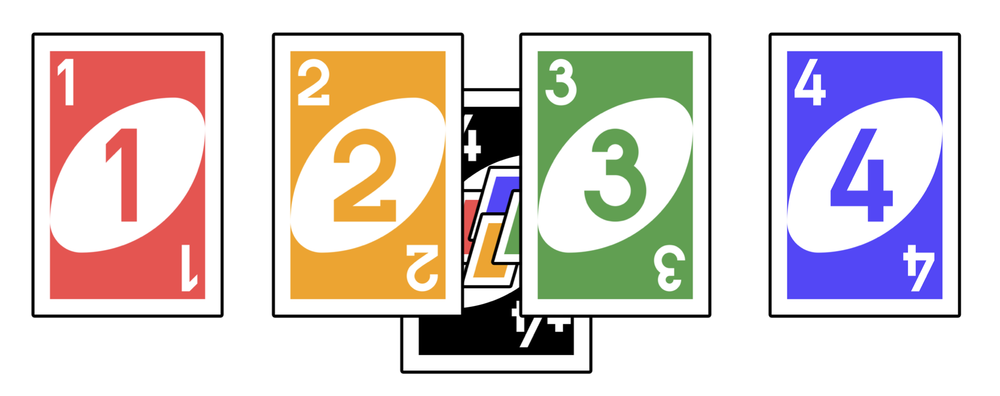
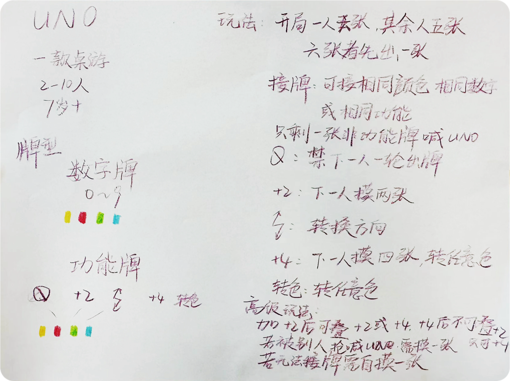

DESIGN THINKING¶
ARTS1701 - 设计思维：产品与交互设计的创新方案
提示
本文章是基于课程期末作业PPT转换而来。由于格式限制，原始PPT中的一些动画效果无法在这里呈现。
Week 01 & 02 - Brief Intro.¶
初来乍到，助教为我们分了组后，老师却让我们打UNO?

原来是为了活跃气氛，之后才是熟悉的自我介绍环节，但
自由发挥？
所以我们组便选取了 10个不同角度来介绍
便有了手绘 + AI制作网页的成果：Gamma

这确实考验我们的创造力、沟通能力和团队协作能力，以及在规定时间内完成对应任务的能力
当然，既然老师说没有标准答案，最重要的便是自！由！发！挥！
Week 03 - 头脑风暴¶
继续打UNO！但这次要求合作写出其规则？

整理 UNO 的全部规则，也许是为了对 UNO 的规则有一个更清晰、更广泛的理解，包括牌型的介绍、玩法等完整的内容及细节。
下面我要提一款桌游...

写完规则后，开始了新的项目：「元宇宙」
我们组分到的主题是未来医院，使用了微信群中腾讯文档协作及ChatGPT的协作，通过头脑风暴收集了大量关于未来医院的idea，并整理到小组作业用纸上。

Week 04 - 思维导图¶
这次不是打 UNO! 了
而是，换成了 SET（神奇形色牌）

当然，还有这周的项目：制作思维导图
题目则是关于科幻片制作，
我们组使用了 Xmind ，并把项目分为三个制作时期，通过使用上节课学到的头脑风暴的方法，更加系统全面的考察了关于科幻片制作的构成和细节，包括三个不同拍摄时期、部门以及设备场地等等。

Week 05 - 用户画像¶
又又换新游戏：步步为营
借助前几次课的经验，对于规则的快速理解及玩法运用更加轻车熟路，明显对于适应新游戏及新概念更加熟练高效。

在 Week 03 中的头脑风暴后产生的大量idea中选择了最具创意的三个：
- 脑机接口麻醉
- 云旅游
- 病症模拟体验
并根据这三个idea描绘了三幅用户画像。

关于用户画像
用户画像是设计思维中的一个重要工具，用于帮助设计团队更好地理解他们的目标用户群体。
主要包括：基本/背景信息、行为习惯、需求、情感因素等等。
Week 06 - 用户故事¶
在对用户故事的学习后，
对于Week 05 中的用户画像，我们组拟了对应的用户故事，并设计了分镜、尝试在不同地点进行彩排，在最后的汇报中挑选了其中一个剧本进行了表演。第一次身临其境地感受了目标用户的处境及对于我们设计的产品的体验。


用户故事 Tips
-
创建目标客户的角色档案
-
始终从用户的角度进行写作
-
避免过早添加技术细节
-
尽量不要添加太多验收标准
-
保持故事简洁
Week 07 - 看展！¶
太过于抽象的艺术…
不论是表现形式、风格、内容及意义，都捉摸不定，甚至不局限于“抽象”二字…
有用借助VR实现的，有交互式游戏形式的，有让人仅仅是看一眼便觉得是自己是理解不了的…

Week 08 - 构成与摄影¶
设计课 OR 摄影课？
在使用基本图形创作了抽象画，并学习了构成与摄影的概念后，老师组织进行了室外活动，需要我们在校园里拍摄，通过照片之间的不同角度的联系一步一步将看似离散的照片串联了起来。

关于构成
构成是一种造型概念
构成是一种有共性的设计语言
平面构成分为基本要素/视觉元素/关系元素
接着又需要我们在拍摄结束后选取几张照片进行“抽象化”。
对于上周才看完抽象展的我们来说，完全不是问题～

Week 09 - 用户旅程¶
继续打步步为营！
这次玩游戏不再是对规则玩法进行分析了，而是记录游玩过程中每个人的情绪变化。
也许这次的项目与换位思考、体验有关？

原来是继续站在用户角度，来分析如何在每个环节上解决用户可能遇到的问题。
为了进一步分析，就需要用到用户旅程图。
用户旅程图
将一个人为了完成某个目标而经历的过程可视化的过程，其中包括了：
- 角色基本信息
- 情景 + 期望旅程阶段
- 行为，想法和情感
- 收获

Week 10 - 情绪板¶

上课前，助教要求带上十样任意的“小东西”？
不禁让人对于今天的课程感到好奇与期待 
其实是为了进行分类！
在排除掉一些比较普遍的特点后，老师让我们自拟一个关键词来将组员所带的小东西分类。
我们组则是选择了两个关键词：「防水的」 / 「使用对象」
同时在大家在白板上提供的关键词中选择了「爱国的」。

在学习了图片所包含的元素及技术层面的构成后，为了对色彩进行了进一步分析，需要使用到情绪板，即
将灵感和概念在纸或者屏幕上进行拼贴组合，来表达设计定义与方向的视觉。
一句话概括，就是：将情绪可视化！
接下来则是从之前的未来医院中提取了两种元素：温暖和高科技，制作了两幅情绪板。

Week 11 - 相互关系¶
在介绍过上周的情绪板之后，又引入了新的概念：「相互关系」。
Project 则是像上周一样利用杂志制作剪贴画，不过这次需要利用到刚学过的相互关系来拍版文字。
我们组拿到的是《科幻世界》，所以便以科幻为主题用文字制作了一艘UFO，这样文字与其构成的内容便相互对应、相互支持，来传达科幻感与未知感、神秘感。

Week 12 - Final.¶
最终还是来到了分别前的最后一课。
记得上周对与这周的作业也简单描述过：
项目书
通过观察学校空间，寻找合适的户外位置，设计一个只有双人才能启用（可交互）的装置或者构建物。
目的是为了促进人与人之间的关系，成为沟通的媒介。
既然是从「交互」/「沟通」出发，在一番冥思苦想之后，我们所设计的装置最终定为了：「纳米材料雨伞」
那么如何进行「交互」呢，请欣赏以用户故事形式的草稿：

即「纳米材料雨伞」可以通过伸缩变换和其他雨伞结合起来，成为一个更大的伞，可以通过模拟用户旅程来想象一个场景：
下雨。五个人带了四把伞。
如果是这种雨伞，就能合成成一把大伞！既包含了「交互」，也包含了「沟通」。

最终完工力！
最考验团队合作能力的一集！

写在后面¶
设计思维确实是一门与看似简单、实则充满学问与讲究的课程，从最简单的打UNO，到思维导图，再到用户故事、用户旅程，一个个知识点与印象中的「设计」似乎大相径庭。
无论是从抽象到具象，还是从具象到抽象，思维是发散还是集中，课程内容始终都在向我传达一个想法：原来设计并不仅仅是若干个idea，更是系统的、全面的一个过程。